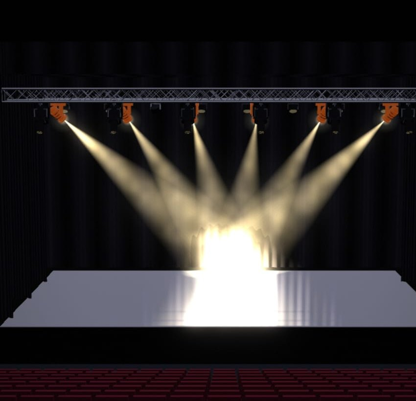
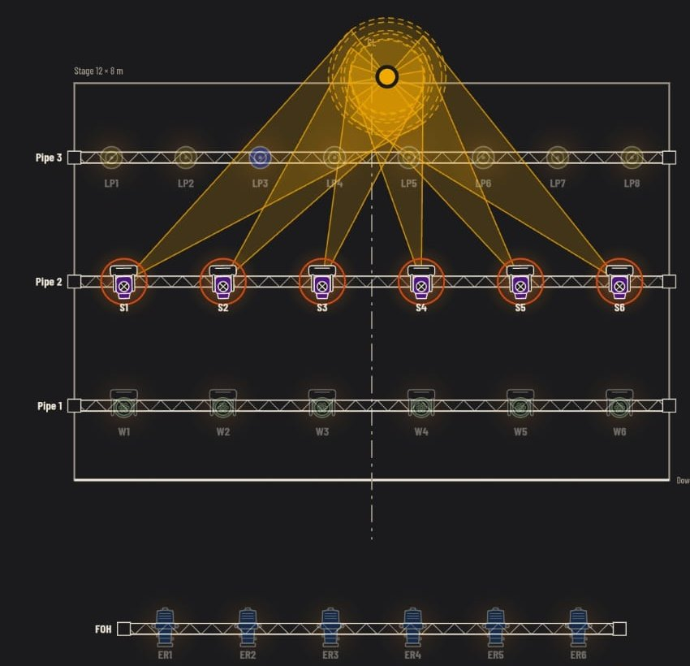

Plan
Ölçekli plan ve asma noktaları
Sahne ölçüleri, köprüler, yan borular ve dik kuleler gerçek ölçüleriyle tanımlanır. Her cihaz numarası, kanalı, DMX adresi ve rengiyle plana yerleşir; huzme ve odak alanları aynı çizimde görüntülenebilir.
- İtalyan sahne, black box ve arena şablonları
- Modları ve kanal haritalarıyla binlerce cihaz modeli
- GDTF ve Open Fixture Library desteği


2D plan3D